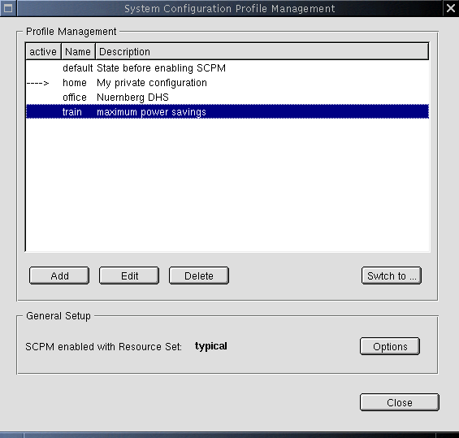

The SCPM Y2 module has one main dialog that pops up whenever the user enters the module:
approved HelptextSCPM allows you to store different profiles of your system configuration and to switch between them. If you are not familiar with SCPM, read the introduction to SCPM in info scpm. If SCPM is not enabled, use Options. In the table, see the list of available profiles. The currently active profile is marked in the column active. After selecting a profile, you can Switch your system configuration to this profile. You will be asked what to do with changes in the active profile before switching. To save changes made to the current system configuration or to undo them, switch to the currently active profile. Add a new profile or Edit or Delete the selected one. Editing a profile does not mean changing the system configuration for this profile, but setting some special actions when entering or leaving this profile. To change the system configuration in a profile, switch to it. Then change your system configuration as usual. To configure SCPM itself, use Options. |
 |
The main dialog is the central point from which all SCPM actions get started. It shows the current state of SCPM to the user and offers access to all SCPM functions and to the SCPM configuration itself. The list box shows the defined profiles, and marks the active one with an arrow in the first column. The focus should be initially on this list box, the active profile should be the selected line. The buttons Reload and Save should only be enabled when the selected profile is also the active one, those actions do not operate on non active profiles. In case SCPM is disabled, all buttons should be disabled except Close and Options, and the user gets the Introduction popup.
You can get all needed information from the
class SCPM. Even before
entering this dialog you may have already called
SCPM::Status. The
scpm_status_t::enabled
flag of the
scpm_status_t struct tells you about wether SCPM is
enabled. In case it is disabled, then show the Introduction popup. The following
queries are only useful (and possible) in case SCPM is enabled.
The struct element
scpm_status_t::active_profile contains a string naming the active
profile. This string can - if needed - also be queried using
SCPM::Active. The list of all profiles can be determined with
SCPM::List.
The current Resource Set can be queried with
SCPM::GetResourceSet.
SCPM::Save. In case it returns false, popup a
small window telling the user an error occured, and show the error (
global variable scpm_error).
SCPM::Delete.